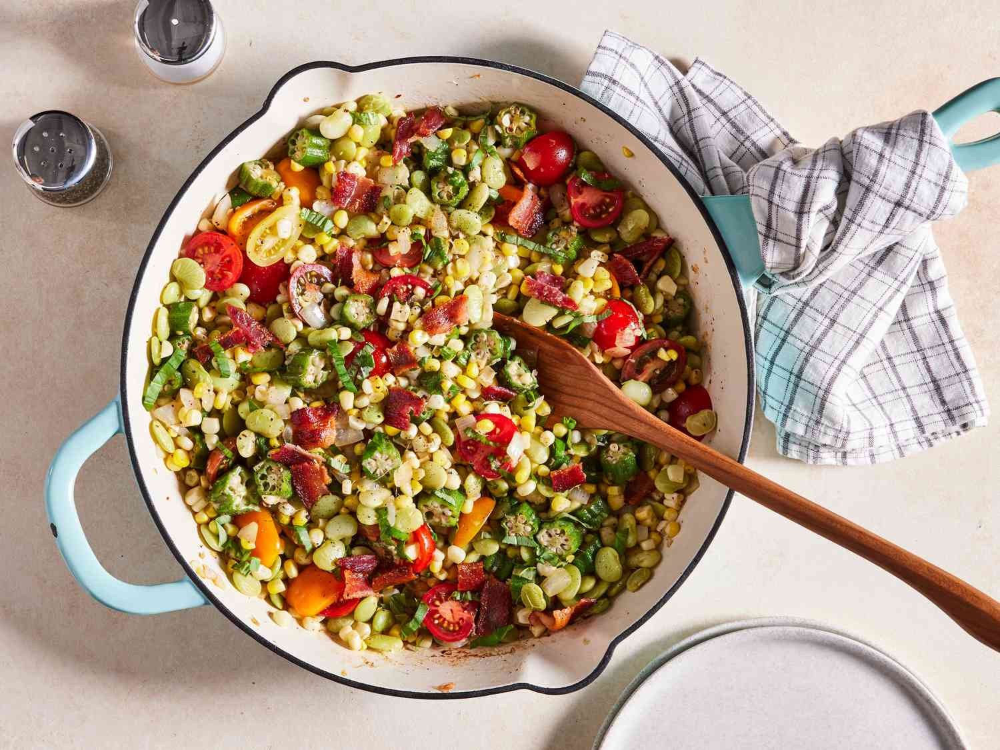

Succotash is a flavorful side dish consisting of vegetables such as corn and lima beans, served in a creamy sauce made with milk, cream, or butter. The name of this tasty side is derived from the word msakwitash, meaning broken corn kernels, referring to one of the key ingredients in the dish.
Meal prep time : 30 minutes
Servings : 6